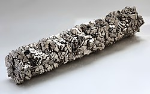

Название, символ, номер Тита́н / Titanium (Ti), 22
Атомная масса
(молярная масса) 47,867(1)[1] а. е. м. (г/моль)
Электронная конфигурация [Ar] 3d2 4s2
Радиус атома 147 пм
Химические свойства
Ковалентный радиус 132 пм
Радиус иона (+4e)68 (+2e)94 пм
Электроотрицательность 1,54 (шкала Полинга)
Электродный потенциал −1,63
Степени окисления 2, 3, 4
Энергия ионизации
(первый электрон) 657,8 (6,8281[2]) кДж/моль (эВ)
Термодинамические свойства простого вещества
Плотность (при н. у.) 4,54 г/см³
Температура плавления 1670 °C/1943 K
Температура кипения 3560 K
Уд. теплота плавления 18,8 кДж/моль
Уд. теплота испарения 422,6 кДж/моль
Молярная теплоёмкость 25,1[3] Дж/(K·моль)
Молярный объём 10,6 см³/моль
Кристаллическая решётка простого вещества
Структура решётки гексагональная
плотноупакованная (α-Ti)
Параметры решётки a=2,951 с=4,697 (α-Ti)
Отношение c/a 1,587
Температура Дебая 380 K
Прочие характеристики
Теплопроводность (300 K) 21,9 Вт/(м·К)